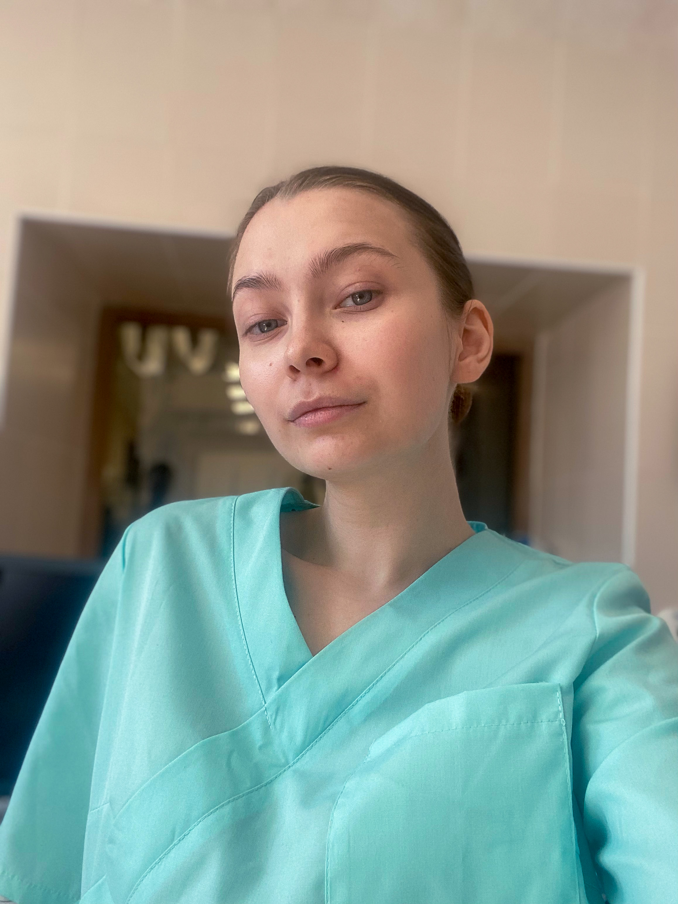
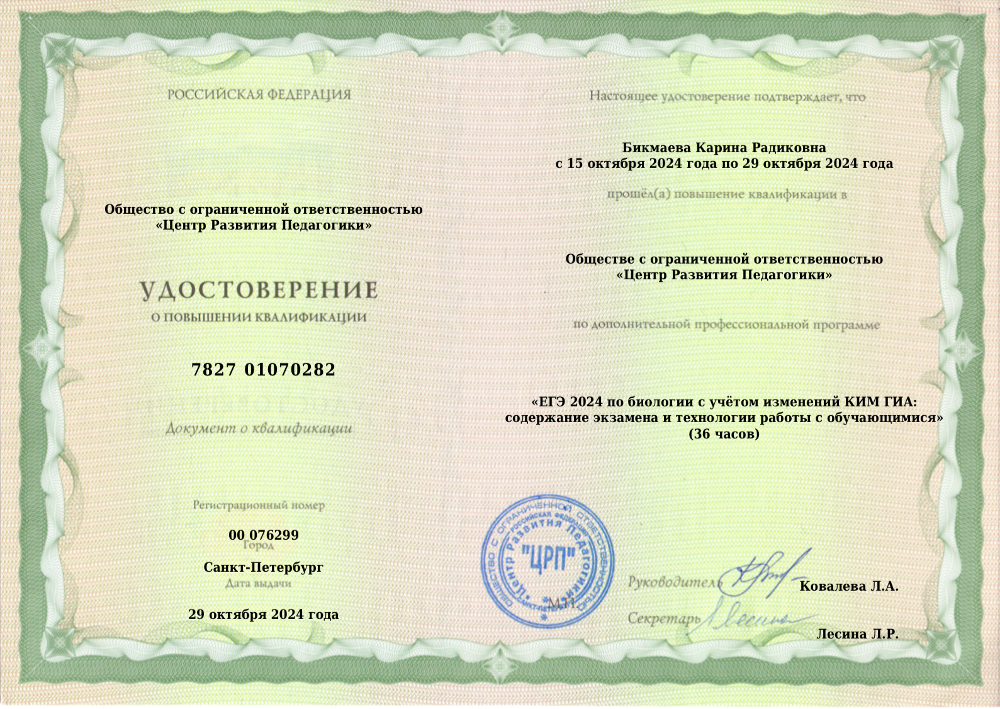
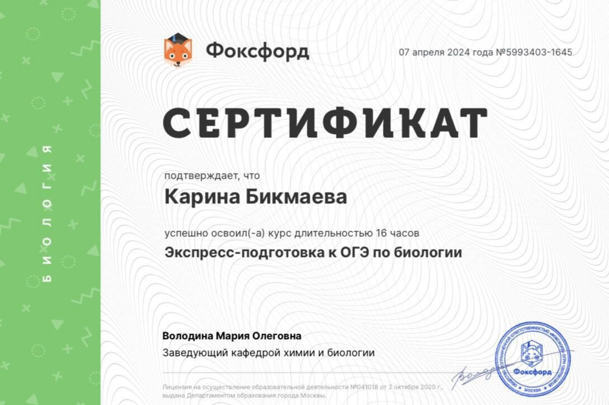
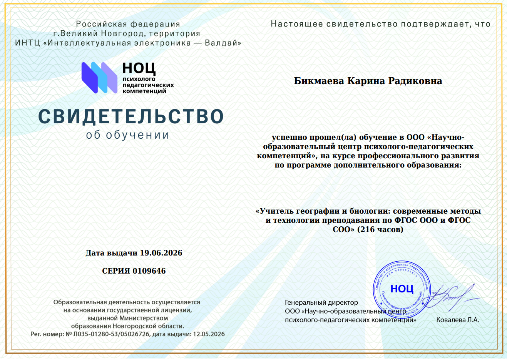
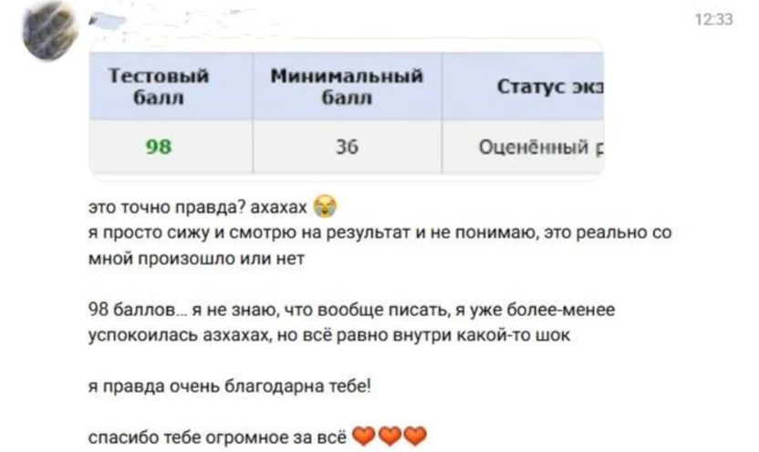
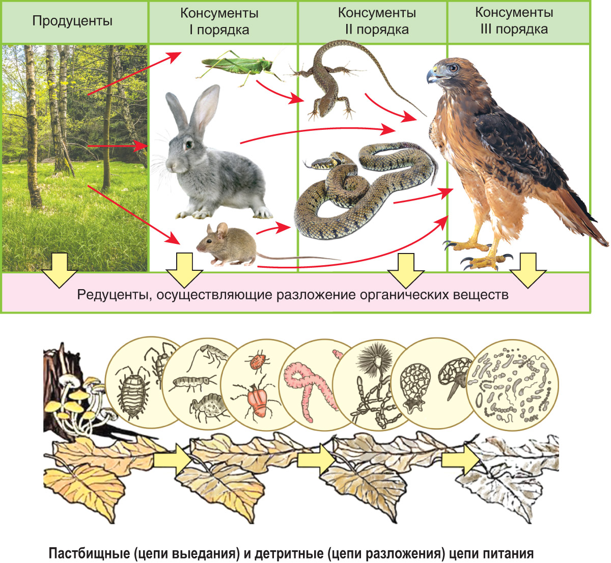

Сегодня немного познакомимся, разберём одну тему по биологии и попробуем себя в заданиях ЕГЭ.
Пробное занятие — это возможность не только познакомиться, но и почувствовать, как проходят мои занятия.

ОткрытьЯ стараюсь
не стоять на месте
Постоянно развиваюсь как преподаватель и повышаю свою экспертность.
По второй части ЕГЭ советуюсь с экспертом ЕГЭ.
Забочусь о том, чтобы подготовка была честной и по-настоящему рабочей.
Слежу за изменениями в ЕГЭ каждый год.

Открыть
Открыть
ОткрытьМне важно постоянно повышать свою экспертность и совершенствовать подход к подготовке.
Лучший результат
ЕГЭ 2026 года
Мне важно показывать реальные результаты работы.

ОткрытьДавай не просто поговорим о занятиях — попробуем провести небольшой фрагмент настоящего урока.
Экология: энергия
в экосистеме
Пирамида энергии и правило 10% Линдемана
Прежде чем говорить об энергии, разберёмся, кто участвует в пищевых цепях.
Создают органические вещества из неорганических.
растения, водоросли
Используют энергию солнца — процесс фотосинтеза.
Получают готовые органические вещества, питаясь другими организмами.
животные
Делятся на порядки: I, II, III — в зависимости от того, кем питаются.
Разлагают органические вещества до более простых неорганических соединений.
бактерии, грибы
Замыкают круговорот веществ в экосистеме.
нажми на карточку, чтобы увидеть подсказку
Пищевая цепь — последовательность организмов, в которой каждый предыдущий организм служит пищей для следующего.
ЦЕПЬ ВЫЕДАНИЯ
Растение → травоядное животное → хищник
Начинается с живого продуцента.
ЦЕПЬ РАЗЛОЖЕНИЯ
Мёртвое органическое вещество → редуценты → неорганические вещества
Начинается с мёртвого органического материала.

ОткрытьТрава
Кузнечик
Лягушка
Уж
нажми на организм, чтобы увидеть его трофический уровень
Что такое трофический уровень?
Трофический уровень — положение организма в пищевой цепи, связанное с его способом получения пищи и энергии.
А что происходит с энергией при переходе между уровнями?
На следующий трофический уровень переходит примерно 10% энергии предыдущего.
Большая часть энергии расходуется организмами на жизнедеятельность и рассеивается в виде тепла.
нажимай на уровни пирамиды
Каждый следующий уровень получает примерно 10% энергии предыдущего.
Если на первом трофическом уровне находится 50 000 кДж энергии, сколько примерно перейдёт на второй?
50 000 × 0,1 = 5 000 кДж
Сначала попробуй решить самостоятельно.
Задание 1 / 5
РЕШЕНИЕ
ОТВЕТ
Посмотрим, насколько уверенно ты ориентируешься в разных разделах биологии.
СВОЯ ИГРА
ОТВЕТ
0
Итоговый счёт
0
Правильных ответов
0
Ошибок
Мне важно не только получить правильный ответ, но и понять, как ты рассуждаешь.
Нажми на любой этап — покажу, что именно происходит на этом шаге.
ЭТАП ПОДГОТОВКИ
Разбираем тему, понимаем основные связи и учимся объяснять материал своими словами.
Здесь проходит работа с учебными материалами и заданиями.
Разбираем темы и связи между ними.
Учимся применять знания на заданиях ЕГЭ.
Закрепляем материал между занятиями.
Периодически проверяем уровень подготовки.
Отслеживаем динамику результатов.
Все необходимые материалы собраны отдельно.
Можно выбрать формат подготовки под свою цель, темп и количество занятий в месяц.
База
9 000 ₽
8 занятий в месяц
Изучаем биологию размеренно и последовательно: разбираем темы до понимания, закрепляем материал заданиями и постепенно повышаем сложность.
Углублённая биология
13 500 ₽
12 занятий в месяц
Больше практики и более глубокое погружение в предмет: упор на углублённую биологию, эвристику и системную подготовку к экзамену на результат 90+.
Сегодня мы успели познакомиться, немного разобрать биологию, попробовать задания ЕГЭ и сыграть в небольшую «Свою игру».
На обычных занятиях будем постепенно выстраивать такую же систему подготовки — от понимания темы до уверенного решения заданий.
Дай, пожалуйста, обратную связь по пробному занятию
Что было понятно, что понравилось и что хотелось бы изменить или разобрать подробнее?